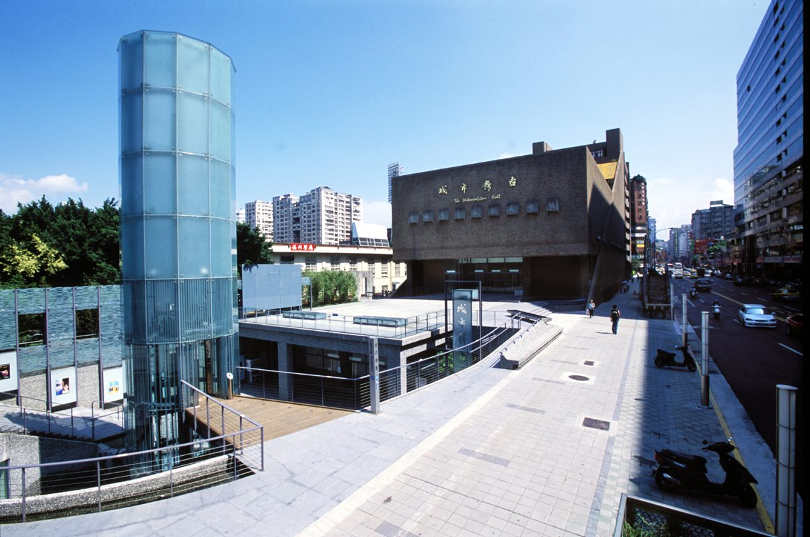
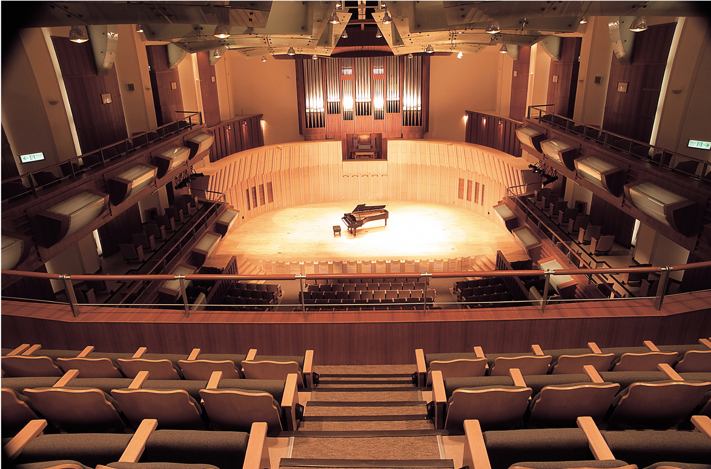

國家戲劇院
Information
臺北市 中正區 中山南路21之1號
(02)3393-9888
1985年2月1日成立「國家戲劇院及音樂廳營運管理籌備處」，正式營運。
2002年8月，教育部通過行政法人設置條例草案，2004年1月9日設置條例經立法院審議通過，同年3月1日正式改制，成為中華民國第一個施行行政法人的機構。
2014年4月轉隸屬文化部轄下「國家表演藝術中心」之演出場館，易名為「國家表演藝術中心國家兩廳院｣
台北城市舞台

Information
臺北市 松山區 八德路三段25號
(02)2577-5931
前身為臺北市立社會教育館，於民國50年4月成立，原隸屬於市府教育局，辦理本市社會教育相關活動。民國88年11月6日市府文化局成立後，配合本市文化政策規劃，改隸文化局，業務型態逐漸調整以劇場營運與藝文推廣為主。
103年配合文化局組織規程修正，正式定名為「臺北市藝文推廣處」，並於104年11月6日揭牌成立。
台北藝術大學展演藝術中心

Information
臺北市 北投區 學園路1號
(02)2893-8745
1992年奉行政院核准設置成立國立藝術學院表演藝術中心，1995年為了推廣視覺藝術，更名展演藝術中心。
本中心分設業務及技術兩組，主要以管理及經營三個劇場—舞蹈廳、戲劇廳、和音樂廳(2005年啟用)，及三個實習工廠。
除了配合各系、所、學院教學、實習、及演出，並從事各項藝術推廣、研習、與展演活動，也開放校外表演團體租用，以活化資源，促進國內外表演藝術的推展。